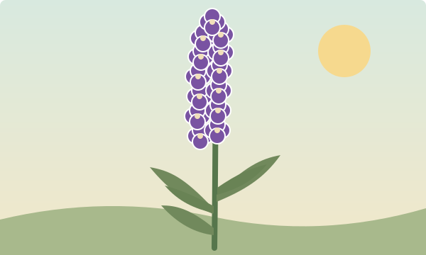

Lavender
General Information
A fragrant, sun-loving herb with purple flower spikes and silvery-green leaves. Lavender brings colour to the garden and a gentle scent to drawers, crafts, and quiet moments.
Give it sunshine, well-drained soil, and a little room to grow. Once established, it is wonderfully low-maintenance.
- Full sun
- Light
- Low
- Water
- Perennial
- Life cycle

Care
How to grow lavender
Lavender prefers conditions that feel a little like the Mediterranean: plenty of light, soil that drains easily, and no overwatering.
A little lavender goes a long way
Ways to use it
- Tie dried stems into small bunches for a room or wardrobe.
- Add dried buds to handmade sachets and craft projects.
- Enjoy the colour and fragrance in borders, pots, and pollinator gardens.
When to harvest
For fragrant bunches, cut flower stems when the first buds have opened, usually on a dry morning. Gather a small bunch and hang it upside down somewhere airy and out of direct sunlight.
Leave plenty of flowers for bees and other pollinators.
Garden note: Lavender is loved by bees. Avoid spraying flowers with pesticides, and leave some blooms for visiting pollinators.
Medicinal Properties
Traditional uses and current evidence
Lavender has traditionally been used for relaxation, sleep, and minor discomfort. Its flowers and essential oil are used in different ways, including scent, topical products, and specially prepared oral supplements; these preparations are not interchangeable.
Some studies suggest that certain standardized oral lavender-oil products may help with anxiety symptoms. Research on aromatherapy for anxiety or sleep is less consistent, and the available studies have limitations. Results for one preparation should not be assumed to apply to lavender tea, garden flowers, or another essential oil.
Evidence is not strong enough to treat lavender as a proven cure for anxiety, insomnia, pain, or other medical conditions. It should not replace an assessment or treatment recommended by a healthcare professional.
Safety
Lavender products can cause side effects. Oral products may cause nausea, diarrhea, headache, or belching; lavender applied to skin can cause irritation or an allergic reaction. Essential oil is concentrated: do not swallow household essential oil or apply it undiluted, and follow the label for any product.
Safety during pregnancy or breastfeeding is not well established. Ask a clinician or pharmacist before using lavender supplements, particularly for a child or alongside medicines that cause drowsiness. Stop use and seek advice if an unwanted reaction occurs.
Source: National Center for Complementary and Integrative Health: Lavender.
Visit the garden
The garden is open every day from sunrise to sunset. Take a slow walk, enjoy the scent of the herbs, and remember to leave the bees in peace.
Explore all herbsSuggested
Explore other favorites from the garden: